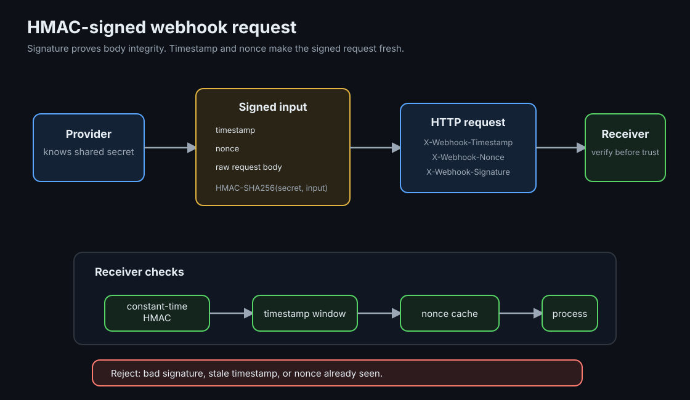

Webhook HMAC Signatures and Replay Protection
A signed webhook lets a receiver verify that the sender knew a shared secret and that the request body was not changed. Replay protection adds freshness, so an old valid request cannot be accepted again.
TLDR
- Sign the raw bytes: compute HMAC over the exact request body plus signed metadata. Do not verify a parsed and re-serialized JSON object.
- Use constant-time comparison: compare decoded MAC bytes with a constant-time function, not normal string equality.
- Bind freshness into the signature: timestamp and nonce should be part of the signed string, not trusted as unsigned headers.
- Store nonces or event ids: HMAC alone accepts a captured valid request again. Timestamp window plus nonce cache rejects replay.
Mental Model
HMAC is a keyed checksum. Both sides know the same secret. The sender computes a MAC over a canonical string and sends the MAC with the request. The receiver recomputes the MAC over the bytes it actually received. If the MACs match, the request came from someone with the secret and the signed bytes were not changed.
That is integrity, not freshness. A captured request still has a valid MAC tomorrow unless the signed data includes time and uniqueness. The usual receiver boundary is: verify MAC, check timestamp tolerance, check nonce or event id, then process the event.

Ground-Up Explanation
What HMAC proves
HMAC-SHA256 takes a secret key and a message, then produces a fixed-size MAC. Without the key, an attacker should not be able to produce the correct MAC for a changed message. This is why webhook signatures protect against body tampering and fake senders, assuming the shared secret stays secret.
What HMAC does not prove
HMAC does not know whether a message is new. If an attacker captures a valid signed request and sends the same bytes again, the MAC still verifies. Freshness has to be part of the protocol: a timestamp limits how long a request can be reused, and a nonce or event id prevents reuse inside that window.
Why raw body matters
JSON has multiple byte representations for the same object. Whitespace, key order, escaping, and number formatting can change without changing the parsed value. If the sender signs raw bytes but the receiver verifies a parsed object, the receiver is checking different data. Read the body once, verify those bytes, then parse it.
Concept Deep Dive
Signed string
A simple signed string is:
timestamp + "." + nonce + "." + raw_bodyThe dots are not security-critical; they only make field boundaries unambiguous. The important part is that every value used for freshness is inside the MAC. If timestamp or nonce are unsigned, an attacker can edit them while keeping the old body signature.
Timestamp tolerance
The receiver should reject timestamps outside a small tolerance window. The window needs to allow normal clock skew and delivery delay, but not long-term reuse. Five minutes is common for general webhooks. Higher-risk actions can use a shorter window when both sides have reliable clocks.
Nonce and event-id storage
A nonce is a unique delivery id. Store it at least as long as the timestamp tolerance window. If the same nonce appears again, reject it as replay. In systems that already have durable idempotency records, the provider's event id can do the same job and also protect business effects from duplicate delivery.
Constant-time compare
Normal equality can return as soon as it finds the first differing byte. In some settings, that timing can leak how many bytes matched. Constant-time comparison checks all bytes before returning. Decode both MACs to bytes, require equal length, then use the language's constant-time compare function.
Implementation Details
- Reject missing signature metadata: timestamp, nonce, and signature should all be required.
- Keep secrets out of code: load the webhook secret from the runtime environment or secret manager.
- Support versioned signatures: a prefix such as
v1=lets you rotate algorithms or signing formats later. - Separate replay protection from idempotency: replay protection rejects duplicate signed deliveries at the edge; idempotency keeps internal effects safe.
- Rotate secrets with overlap: accept old and new secrets during rotation, then remove the old secret after providers have switched.
Production examples
Webhook verification belongs at the first trusted boundary of the receiving service, before parsing the event into business objects or enqueueing internal work. Capture the raw request body, timestamp, nonce or event id, and signature headers, verify them, then pass a trusted event object to the rest of the system.
Common webhook sources include payment providers, identity providers, source-control systems, chat platforms, and internal event gateways. In all of them, HTTPS protects transport, while HMAC proves the body was signed by a party that knows the shared secret. The two controls solve different problems.
Replay protection and idempotency should both exist. Replay protection rejects the same signed delivery inside the freshness window. Idempotency protects the downstream effect when a provider legitimately retries a valid event after a timeout, or when the receiver crashes after doing the work but before returning success.
Lab Evidence
The runnable lab is labs/security/webhook-hmac: a Go webhook receiver and client. The insecure mode verifies HMAC only. The secure mode verifies HMAC, timestamp tolerance, and nonce replay.
make break
HMAC-only receiver accepts the same signed request twice.
make test
Secure receiver accepts valid delivery and rejects tampered, stale, and replayed delivery.
make tamper / stale / replay
Run each failure case independently against the secure receiver.
Measured output (2026-07-08)
make break:
replay-vulnerable first: got=200 want=200 accepted event: evt-replay
replay-vulnerable second: got=200 want=200 accepted event: evt-replay
make test:
valid: got=200 want=200 accepted event: evt-valid
tamper: got=401 want=401 bad signature
stale: got=401 want=401 timestamp outside tolerance
replay first: got=200 want=200 accepted event: evt-replay
replay second: got=409 want=409 replay detectedProduction Notes
- Use HTTPS as the transport. HMAC does not hide the body; it only authenticates it.
- Log verification failures carefully. Do not log secrets or full signatures; short prefixes are enough for debugging.
- Store nonce or event id in shared durable storage when receivers run as multiple instances. In-memory storage works only for a single-process lab.
- Design the downstream handler to be idempotent anyway. Providers can retry valid deliveries after network failures.
Code Pointers
| Code | Why it matters |
|---|---|
src/main.go | Receiver and client: signing string, constant-time compare, timestamp check, nonce cache, and scenarios. |
Makefile | Secure and insecure receiver modes plus focused failure targets. |
compose.yaml | Dockerized receiver and client with the secret supplied through environment. |